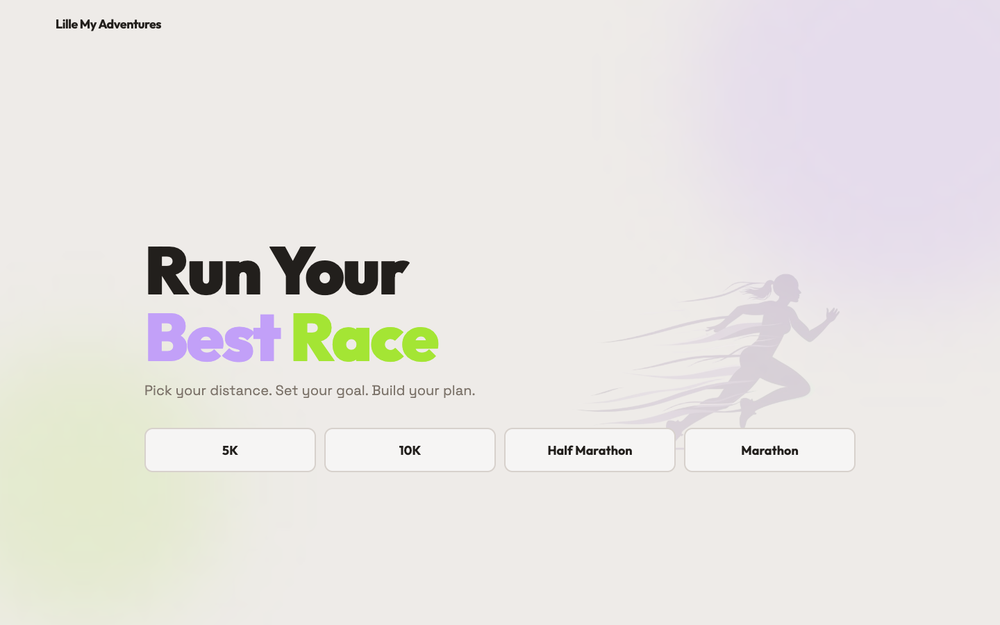
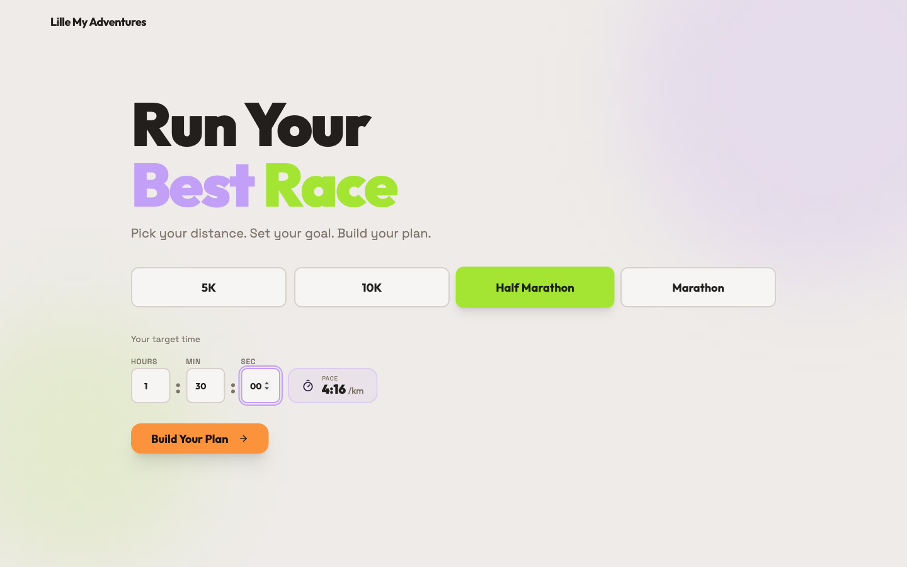
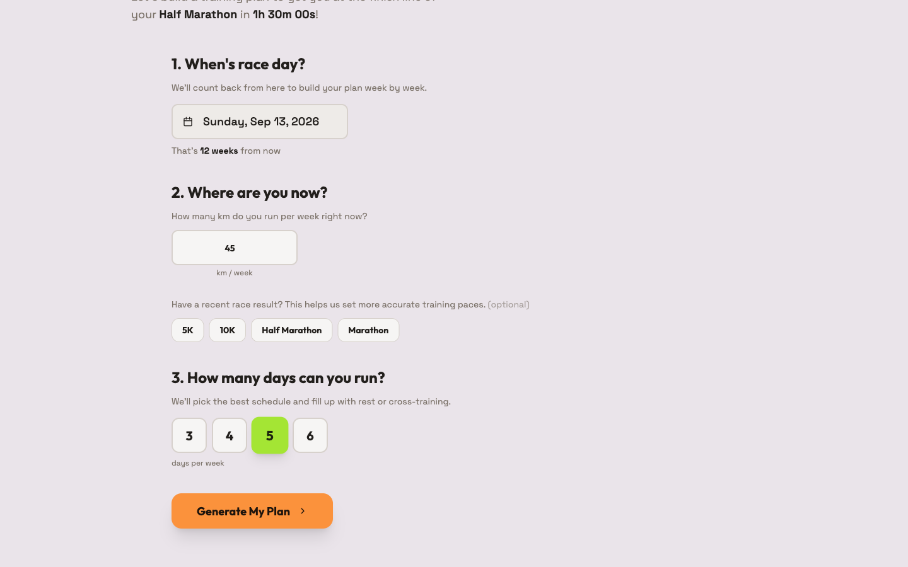
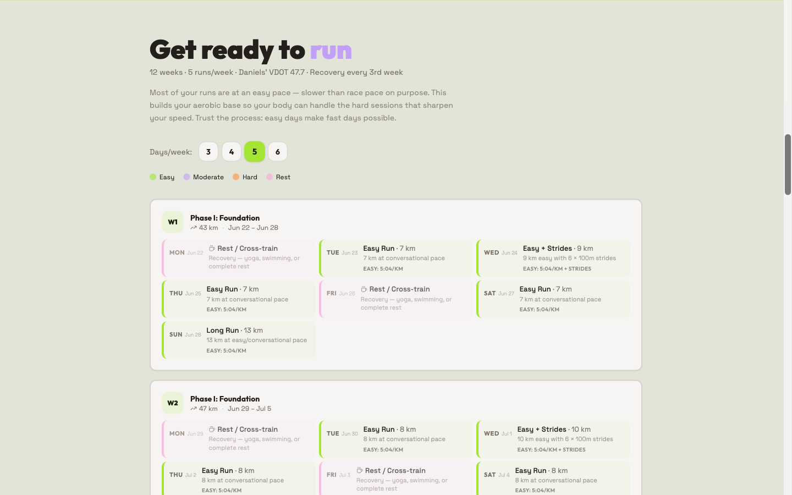
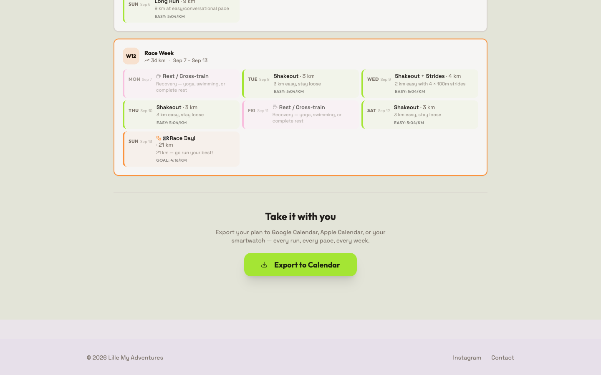

Side project · 2026
A personalized running training plan generator — from goal time to week-by-week schedule in under a minute, built on Jack Daniels' VDOT methodology.

Overview
Scaffolded in Lovable during their #shebuilds International Women's Day campaign — a first experiment with AI-assisted development. The core flow was working within hours. A few passes in Claude Code afterwards tightened the UI and fixed edge cases.
I chose this project because I could be the user myself — as a runner, I wanted a plan I'd actually follow. Every iteration pulled in the same direction: strip the surface, strengthen the substance.
The app




1 / Pick your distance
Design decisions
VDOT over simpler pace tables
Jack Daniels' VDOT system derives five training pace zones — easy, marathon, threshold, interval, repetition — from a single performance input. It's more accurate than generic percentage-of-race-pace tables and is widely used by running coaches. The result is specific, actionable pace targets rather than vague effort levels.
shadcn/ui for accessible components out of the box
A multi-step form with a date picker, number inputs, and toggle buttons is a lot of ground-up work. shadcn/ui components are keyboard-accessible and mobile-friendly by default — the right foundation for a tool people will use on their phone while planning a training week.
Framer Motion for step transitions
The multi-step flow needed to feel smooth, not like a page reload. Framer Motion's AnimatePresence handles enter and exit transitions between steps with a single wrapper — very little code for a noticeably better experience.
ICS export over a native calendar integration
No OAuth flow, no API keys, no platform lock-in. An ICS file opens in Google Calendar, Apple Calendar, and Outlook alike. Every workout lands in the right week with paces in the event description.
Single-page, no backend
All calculations happen in the browser. No server, no database, no login. The plan generates instantly, and there's nothing to store or secure. The right scope for a build-to-learn project — ship the interesting part, skip the infrastructure.
Hero as instant value
After the planner flow got richer, the pace calculator was pulled back into the hero — so users see their target pace per km before committing to the full setup. Give value first, ask for input second.
Rigorous underneath, readable on top
VDOT jargon never surfaces to the user. The science does the work invisibly; the interface just shows paces and phases.
No duplicate inputs
Once the hero captures distance and goal time, those values carry directly into the planner — no re-entry. A small detail, but it reflects thinking about the full flow rather than individual screens in isolation.